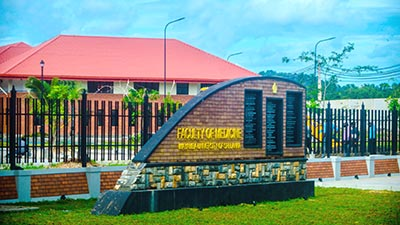
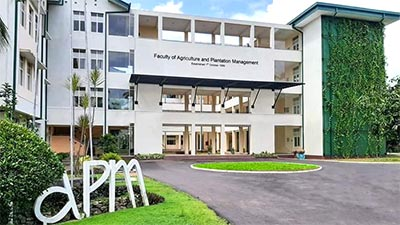
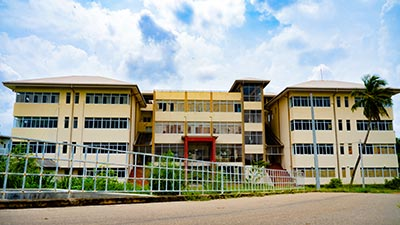

Students Life
The Computer Unit and the English Language Teaching Unit, which come under the purview of the vice-chancellor, operate through a director or a coordinator, offer service courses to the undergraduates of both faculties at Kuliyapitiya to further their IT, oral and written communication skills. An academic year consists of two semesters of 15 weeks each. Academic programs are based on a course credit system, which embodies characteristics such as modularity, flexibility, and accumulation of credits. After a semester, a two-week study leave is given before the semester-end examinations conducted in a three-week period. However, examinations of practical components, project work, in-plant training programs, etc. may be held before the semester-end examination period as decided by the departmen
  